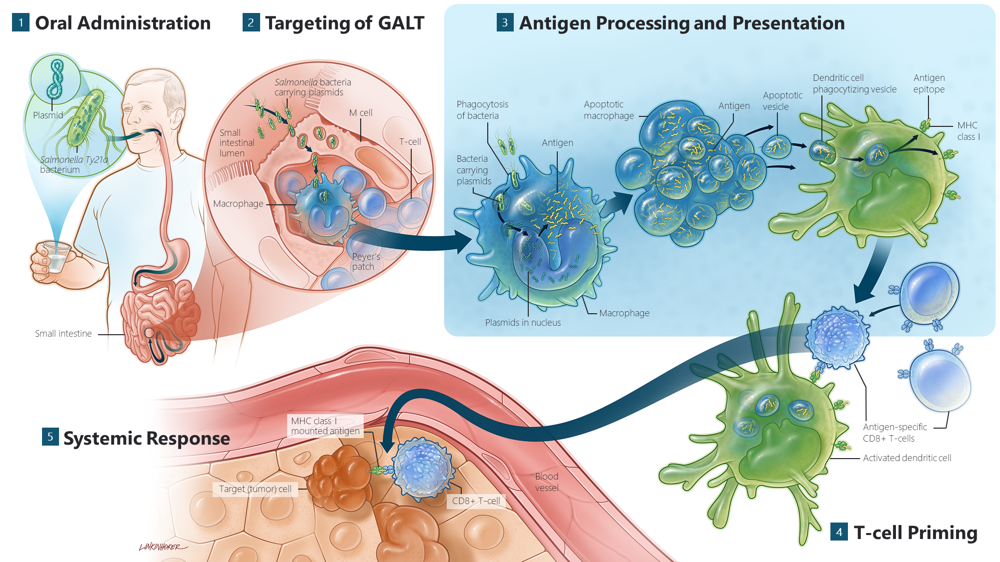
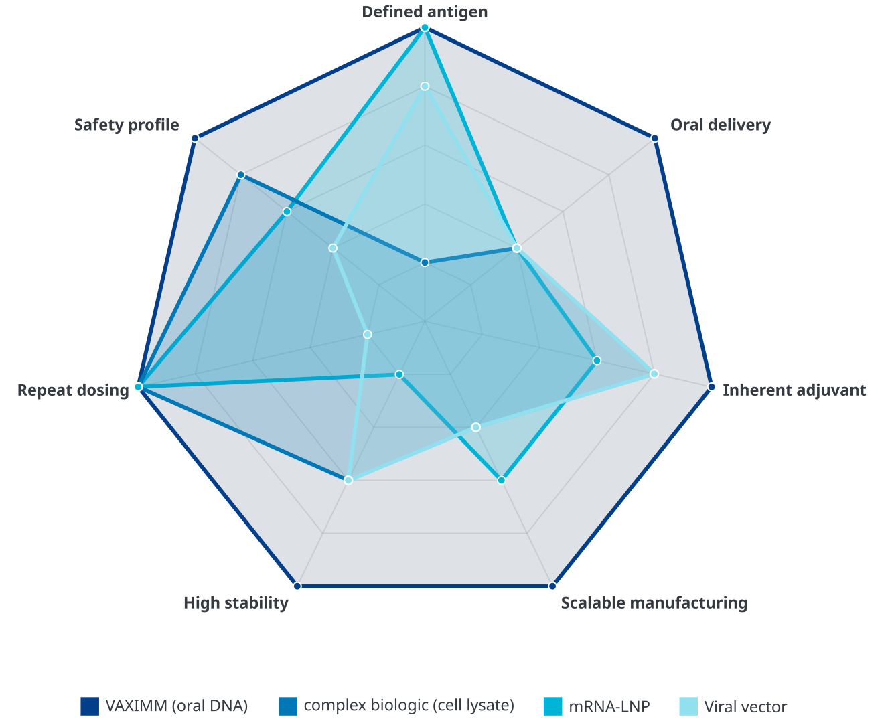

VAXIMM’s technology is based on first-in-class oral T-cell activators that can be readily adapted to target a wide range of antigens.
The platform is based on the live attenuated bacterial vaccine strain Ty21 (Vivotif™), which has been administered to millions of people as a prophylactic vaccine to temporarily protect them from typhoid fever. This strain has been proven to be very safe and well tolerated. All immunotherapies resulting from this platform are taken orally by the patient. (Andreas G. Niethammer et al. 2001; Andreas G. Niethammer et al. 2002)
Unique Mechanism of Action
After oral ingestion, the modified Ty21a bacteria, which contain the cDNA of the desired cancer target(s), pass the stomach and invade the patient’s Peyer’s patches located in the small intestine. Uptake of the bacteria in macrophages, the eating cells present in these lymphoid tissues, leads to strong expression of and subsequently to a specific cellular immune response towards the encoded cancer antigen(s). These so-called “killer” T-cells then destroy the respective antigen expressing tumor or tumor stroma cells.

Key Platform Advantages
The oral bacterial technology enables delivery to the most immunocompetent organ of the body, targeting the lymphatic tissue of the gut, and has been shown to generate robust T-cell responses against many different antigens in animals and humans in first clinical studies.
The low therapeutic doses required for specific T-cell activation make this approach suitable for continuous dosing (prime and boost administrations), without raising anti-carrier immunity, and provide another safety margin for carrier-related toxicity.
The platform is suitable for addressing multiple targets with one treatment and can be combined with additional immune therapies. Another major advantage of this approach is the high modularity (plug and play), the low cost and robustness of the production process, and the rapid development timelines taking products from concept to clinical stage.
This oral bacterial technology enables several key advantages:
- Robust T-cell response: has been shown to generate strong T-cell responses against many different antigens in both animals and humans.
- Continuous dosing: the low therapeutic doses required are suitable for continuous prime and boost administrations without raising anti-carrier immunity, adding a significant safety margin.
- Platform versatility: the platform is suitable for addressing multiple targets with a single treatment and can be easily combined with other immunotherapies.
- Rapid & efficient: the approach features high modularity (‘plug and play’ capability), a low-cost and robust production process, and rapid development timelines from concept to the clinical stage.
The competitive edge
How does VAXIMM stack up? We combine the best attributes of modern vaccine technologies while mitigating their key weaknesses. This chart compares our platform against major alternatives across critical therapeutic and logistical features.
